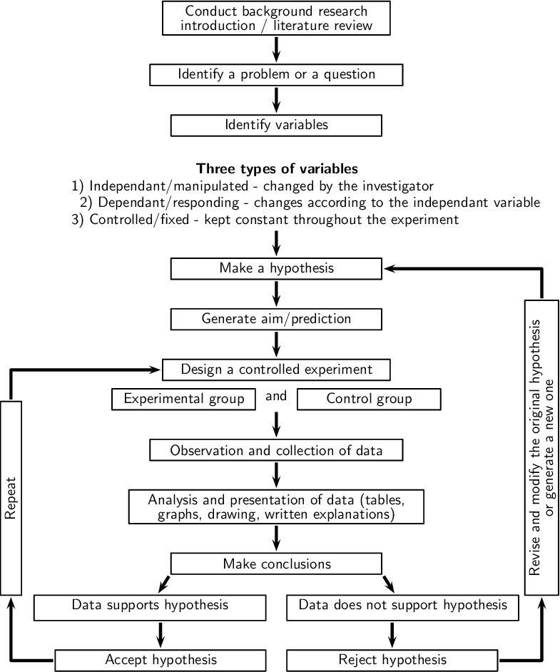

The most important thing about science and the scientific theory is that it is not set in stone. Hypotheses are formed and carefully tested and scientific theories that explain what is observed are formed. The results are not made to fit the hypotheses. If new information comes to light with the coming of better equipment, or the results of other experiments, this new information is used to improve and expand current theories. If a theory is found to have been incorrect it is changed to fit this new information.
Gravity
History of gravitational theory
Modern work on gravitational theory began with the work of Galileo Galilei in the late 16th and early 17th centuries. In his famous (though possibly apocryphal[2]) experiment dropping balls from the Tower of Pisa, and later with careful measurements of balls rolling down inclines, Galileo showed that gravitation accelerates all objects at the same rate. This was a major departure from Aristotle's belief that heavier objects accelerate faster.[3] Galileo correctly postulated air resistance as the reason that lighter objects may fall slower in an atmosphere. Galileo's work set the stage for the formulation of Newton's theory of gravity.
Newton's theory of gravitation
Sir Isaac Newton, an English physicist who lived from 1642 to 1727
In 1687, English mathematician Sir Isaac Newton published Principia, which hypothesizes the inverse-square law of universal gravitation. In his own words, “I deduced that the forces which keep the planets in their orbs must [be] reciprocally as the squares of their distances from the centers about which they revolve: and thereby compared the force requisite to keep the Moon in her Orb with the force of gravity at the surface of the Earth; and found them answer pretty nearly.”[4]
Newton's theory enjoyed its greatest success when it was used to predict the existence of Neptune based on motions of Uranus that could not be accounted for by the actions of the other planets. Calculations by both John Couch Adams and Urbain Le Verrier predicted the general position of the planet, and Le Verrier's calculations are what led Johann Gottfried Galle to the discovery of Neptune.
A discrepancy in Mercury's orbit pointed out flaws in Newton's theory. By the end of the 19th century, it was known that its orbit showed slight perturbations that could not be accounted for entirely under Newton's theory, but all searches for another perturbing body (such as a planet orbiting the Sun even closer than Mercury) had been fruitless. The issue was resolved in 1915 by Albert Einstein's new theory of general relativity, which accounted for the small discrepancy in Mercury's orbit.
Although Newton's theory has been superseded, most modern non-relativistic gravitational calculations are still made using Newton's theory because it is a much simpler theory to work with than general relativity, and gives sufficiently accurate results for most applications involving sufficiently small masses, speeds and energies.
Equivalence principle
The equivalence principle, explored by a succession of researchers including Galileo, Loránd Eötvös, and Einstein, expresses the idea that all objects fall in the same way. The simplest way to test the weak equivalence principle is to drop two objects of different masses or compositions in a vacuum, and see if they hit the ground at the same time. These experiments demonstrate that all objects fall at the same rate when friction (including air resistance) is negligible. More sophisticated tests use a torsion balance of a type invented by Eötvös. Satellite experiments, for example STEP, are planned for more accurate experiments in space.[5]
Formulations of the equivalence principle include:
The weak equivalence principle: The trajectory of a point mass in a gravitational field depends only on its initial position and velocity, and is independent of its composition.[6]
The Einsteinian equivalence principle: The outcome of any local non-gravitational experiment in a freely falling laboratory is independent of the velocity of the laboratory and its location in spacetime.[7]
The strong equivalence principle requiring both of the above.
General relativity
Two-dimensional analogy of spacetime distortion generated by the mass of an object. Matter changes the geometry of spacetime, this (curved) geometry being interpreted as gravity. White lines do not represent the curvature of space but instead represent the coordinate system imposed on the curved spacetime, which would be rectilinear in a flat spacetime.
General relativity
In general relativity, the effects of gravitation are ascribed to spacetime curvature instead of a force. The starting point for general relativity is the equivalence principle, which equates free fall with inertial motion, and describes free-falling inertial objects as being accelerated relative to non-inertial observers on the ground.[8][9] In Newtonian physics, however, no such acceleration can occur unless at least one of the objects is being operated on by a force.
Einstein proposed that spacetime is curved by matter, and that free-falling objects are moving along locally straight paths in curved spacetime. These straight paths are called geodesics. Like Newton's first law of motion, Einstein's theory states that if a force is applied on an object, it would deviate from a geodesic. For instance, we are no longer following geodesics while standing because the mechanical resistance of the Earth exerts an upward force on us, and we are non-inertial on the ground as a result. This explains why moving along the geodesics in spacetime is considered inertial.
Einstein discovered the field equations of general relativity, which relate the presence of matter and the curvature of spacetime and are named after him. The Einstein field equations are a set of 10 simultaneous, non-linear, differential equations. The solutions of the field equations are the components of the metric tensor of spacetime. A metric tensor describes a geometry of spacetime. The geodesic paths for a spacetime are calculated from the metric tensor.
Notable solutions of the Einstein field equations include:
The Schwarzschild solution, which describes spacetime surrounding a spherically symmetric non-rotating uncharged massive object. For compact enough objects, this solution generated a black hole with a central singularity. For radial distances from the center which are much greater than the Schwarzschild radius, the accelerations predicted by the Schwarzschild solution are practically identical to those predicted by Newton's theory of gravity.
The Reissner-Nordström solution, in which the central object has an electrical charge. For charges with a geometrized length which are less than the geometrized length of the mass of the object, this solution produces black holes with two event horizons.
The Kerr solution for rotating massive objects. This solution also produces black holes with multiple event horizons.
The Kerr-Newman solution for charged, rotating massive objects. This solution also produces black holes with multiple event horizons.
The cosmological Friedmann-Lemaitre-Robertson-Walker solution, which predicts the expansion of the universe.
The tests of general relativity included the following:[10]
General relativity accounts for the anomalous perihelion precession of Mercury.2
The prediction that time runs slower at lower potentials has been confirmed by the Pound–Rebka experiment, the Hafele–Keating experiment, and the GPS.
The prediction of the deflection of light was first confirmed by Arthur Stanley Eddington from his observations during the Solar eclipse of May 29, 1919.[11][12] Eddington measured starlight deflections twice those predicted by Newtonian corpuscular theory, in accordance with the predictions of general relativity. However, his interpretation of the results was later disputed.[13] More recent tests using radio interferometric measurements of quasars passing behind the Sun have more accurately and consistently confirmed the deflection of light to the degree predicted by general relativity.[14] See also gravitational lens.
The time delay of light passing close to a massive object was first identified by Irwin I. Shapiro in 1964 in interplanetary spacecraft signals.
Gravitational radiation has been indirectly confirmed through studies of binary pulsars.
Alexander Friedmann in 1922 found that Einstein equations have non-stationary solutions (even in the presence of the cosmological constant). In 1927 Georges Lemaître showed that static solutions of the Einstein equations, which are possible in the presence of the cosmological constant, are unstable, and therefore the static universe envisioned by Einstein could not exist. Later, in 1931, Einstein himself agreed with the results of Friedmann and Lemaître. Thus general relativity predicted that the Universe had to be non-static—it had to either expand or contract. The expansion of the universe discovered by Edwin Hubble in 1929 confirmed this prediction.[15]
The theory's prediction of frame dragging was consistent with the recent Gravity Probe B results.[16]
General relativity predicts that light should lose its energy when travelling away from the massive bodies. The group of Radek Wojtak of the Niels Bohr Institute at the University of Copenhagen collected data from 8000 galaxy clusters and found that the light coming from the cluster centers tended to be red-shifted compared to the cluster edges, confirming the energy loss due to gravity.[17]
Gravity and quantum mechanics
In the decades after the discovery of general relativity it was realized that general relativity is incompatible with quantum mechanics.[18] It is possible to describe gravity in the framework of quantum field theory like the other fundamental forces, such that the attractive force of gravity arises due to exchange of virtual gravitons, in the same way as the electromagnetic force arises from exchange of virtual photons.[19][20] This reproduces general relativity in the classical limit. However, this approach fails at short distances of the order of the Planck length,[18] where a more complete theory of quantum gravity (or a new approach to quantum mechanics) is required.
Atomic theory
In chemistry and physics, atomic theory is a scientific theory of the nature of matter, which states that matter is composed of discrete units called atoms, as opposed to the earlier concept which held that matter could be divided into any arbitrarily small quantity. It began as a philosophical concept in ancient Greece (Democritus) and India (Anu, Parmanu in Vedas) and entered the scientific mainstream in the early 19th century when discoveries in the field of chemistry showed that matter did indeed behave as if it were made up of particles.
The word "atom" (from the ancient Greek adjective atomos, 'indivisible'.[1] 19th century chemists began using the term in connection with the growing number of irreducible chemical elements. While seemingly apropos, around the turn of the 20th century, through various experiments with electromagnetism and radioactivity, physicists discovered that the so-called "indivisible atom" was actually a conglomerate of various subatomic particles (chiefly, electrons, protons and neutrons) which can exist separately from each other. In fact, in certain extreme environments, such as neutron stars, extreme temperature and pressure prevents atoms from existing at all. Since atoms were found to be divisible, physicists later invented the term "elementary particles" to describe the 'indivisible', though not indestructible, parts of an atom. The field of science which studies subatomic particles is particle physics, and it is in this field that physicists hope to discover the true fundamental nature of matter.
Ancient atomic theory
The natural philosophy of atomism developed in several ancient traditions. In the Western tradition, the existence of atoms was first proposed by Greek philosophers such as Democritus, Leucippus, and the Epicureans. The atomists theorized that the natural world consists of two fundamental parts: indivisible atoms and empty void. Atoms are indestructible and immutable and there are an infinite variety of shapes and sizes. They move through the void, bouncing off each other, sometimes becoming hooked with one or more others to form a cluster. Clusters of different shapes, arrangements, and positions give rise to the various macroscopic substances in the world.[2][1]
Early modern development
The Jesuit priest[3] Roger Boscovich provided the first general mathematical theory of atomism, based on the ideas of Newton and Leibniz but transforming them so as to provide a programme for atomic physics.[4] In 1745, Boscovich published De Viribus Vivis in which he tried to find a middle way between Isaac Newton's gravitational theory and Gottfried Leibniz's metaphysical theory of monad-points. He developed a concept of "impenetrability" as a property of hard bodies which explained their behavior in terms of force rather than matter. Stripping atoms of their matter, impenetrability is disassociated from hardness and then put in an arbitrary relationship to elasticity. Impenetrability has a Cartesian sense that more than one point cannot occupy the same location at once.[5] In Venice in 1758, he published the first edition of his work, Theoria philosophiae naturalis redacta ad unicam legem virium in natura existentium (Theory of Natural philosophy derived to the single Law of forces which exist in Nature), containing his atomic theory and his theory of forces.[6]
Near the end of the 18th century, two laws about chemical reactions emerged without referring to the notion of an atomic theory. The first was the law of conservation of mass, formulated by Antoine Lavoisier in 1789, which states that the total mass in a chemical reaction remains constant (that is, the reactants have the same mass as the products).[7] The second was the law of definite proportions. First proven by the French chemist Joseph Louis Proust in 1799,[8] this law states that if a compound is broken down into its constituent elements, then the masses of the constituents will always have the same proportions, regardless of the quantity or source of the original substance.
John Dalton studied and expanded upon this previous work and developed the law of multiple proportions: if two elements came together to form more than one compound, then the ratios of the masses of the second element which combine with a fixed mass of the first element will be ratios of small integers. For instance, Proust had studied tin oxides and found that their masses were either 88.1% tin and 11.9% oxygen or 78.7% tin and 21.3% oxygen (these were tin(II) oxide and tin dioxide respectively). Dalton noted from these percentages that 100g of tin will combine either with 13.5g or 27g of oxygen; 13.5 and 27 form a ratio of 1:2. Dalton found an atomic theory of matter could elegantly explain this common pattern in chemistry - in the case of Proust's tin oxides, one tin atom will combine with either one or two oxygen atoms.[9]
Dalton also believed atomic theory could explain why water absorbed different gases in different proportions: for example, he found that water absorbed carbon dioxide far better than it absorbed nitrogen.[10] Dalton hypothesized this was due to the differences in mass and complexity of the gases' respective particles. Indeed, carbon dioxide molecules (CO2) are heavier and larger than nitrogen molecules (N2).
Dalton proposed that each chemical element is composed of atoms of a single, unique type, and though they cannot be altered or destroyed by chemical means, they can combine to form more complex structures (chemical compounds). This marked the first truly scientific theory of the atom, since Dalton reached his conclusions by experimentation and examination of the results in an empirical fashion.
Various atoms and molecules as depicted in John Dalton's A New System of Chemical Philosophy (1808).
In 1803 Dalton orally presented his first list of relative atomic weights for a number of substances. This paper was published in 1805, but he did not discuss there exactly how he obtained these figures.[10] The method was first revealed in 1807 by his acquaintance Thomas Thomson, in the third edition of Thomson's textbook, A System of Chemistry. Finally, Dalton published a full account in his own textbook, A New System of Chemical Philosophy, 1808 and 1810.
Dalton estimated the atomic weights according to the mass ratios in which they combined, with the hydrogen atom taken as unity. However, Dalton did not conceive that with some elements atoms exist in molecules — e.g. pure oxygen exists as O2. He also mistakenly believed that the simplest compound between any two elements is always one atom of each (so he thought water was HO, not H2O).[11] This, in addition to the crudity of his equipment, flawed his results. For instance, in 1803 he believed that oxygen atoms were 5.5 times heavier than hydrogen atoms, because in water he measured 5.5 grams of oxygen for every 1 gram of hydrogen and believed the formula for water was HO. Adopting better data, in 1806 he concluded that the atomic weight of oxygen must actually be 7 rather than 5.5, and he retained this weight for the rest of his life. Others at this time had already concluded that the oxygen atom must weigh 8 relative to hydrogen equals 1, if one assumes Dalton's formula for the water molecule (HO), or 16 if one assumes the modern water formula.[12]
The flaw in Dalton's theory was corrected in principle in 1811 by Amedeo Avogadro. Avogadro had proposed that equal volumes of any two gases, at equal temperature and pressure, contain equal numbers of molecules (in other words, the mass of a gas's particles does not affect the gas volume that it occupies, which in turn is much larger than the volume of the molecule itself).[13] Avogadro's law allowed him to deduce the diatomic nature of numerous gases by studying the volumes at which they reacted. For instance: since two liters of hydrogen will react with just one liter of oxygen to produce two liters of water vapor (at constant pressure and temperature), it meant a single oxygen molecule splits in two in order to form two particles of water. Thus, Avogadro was able to offer more accurate estimates of the atomic mass of oxygen and various other elements, and made a clear distinction between molecules and atoms. However, in the first half of the nineteenth century most chemists viewed Avogadro's ideas as excessively hypothetical, and had theoretical reasons for doubting the truth of Avogadro's ideas. These ideas were widely accepted in the chemical community only after about 1860.
In 1827, the British botanist Robert Brown observed that dust particles inside pollen grains floating in water constantly jiggled about for no apparent reason. In 1905, Albert Einstein theorized that this Brownian motion was caused by the water molecules continuously knocking the grains about, and developed a hypothetical mathematical model to describe it.[14] This model was validated experimentally in 1908 by French physicist Jean Perrin, thus providing additional validation for particle theory (and by extension atomic theory).
Discovery of subatomic particles
The cathode rays (blue) were emitted from the cathode, sharpened to a beam by the slits, then deflected as they passed between the two electrified plates.
Atoms were thought to be the smallest possible division of matter until 1897 when J.J. Thomson discovered the electron through his work on cathode rays.[15] A Crookes tube is a sealed glass container in which two electrodes are separated by a vacuum. When a voltage is applied across the electrodes, cathode rays are generated, creating a glowing patch where they strike the glass at the opposite end of the tube. Through experimentation, Thomson discovered that the rays could be deflected by an electric field (in addition to magnetic fields, which was already known). He concluded that these rays, rather than being a form of light, were composed of very light negatively charged particles he called "corpuscles" (they would later be renamed electrons by other scientists).
Thomson believed that the corpuscles emerged from the molecules of gas around the cathode. He thus concluded that atoms were divisible, and that the corpuscles were their building blocks. To explain the overall neutral charge of the atom, he proposed that the corpuscles were distributed in a uniform sea of positive charge; this was the plum pudding model[16] as the electrons were embedded in the positive charge like plums in a plum pudding (although in Thomson's model they were not stationary).
Thomson's plum pudding model was disproved in 1909 by one of his former students, Ernest Rutherford, who discovered that most of the mass and positive charge of an atom is concentrated in a very small fraction of its volume, which he assumed to be at the very center.
In the gold foil experiment, Hans Geiger and Ernest Marsden (colleagues of Rutherford working at his behest) shot alpha particles at a thin sheet of gold, measuring their deflection with a fluorescent screen.[17] Given the very small mass of the electrons, the high momentum of the alpha particles and the unconcentrated distribution of positive charge of the plum pudding model, the experimenters expected all the alpha particles to pass through the gold sheet without significant deflection. To their astonishment, a small fraction of the alpha particles experienced heavy deflection. It was thus evident that most of the mass of the nucleus was concentrated in a very small part of the atom, which could either be electrically neutral or not. The alpha particles passing in close proximity of an electrically neutral mass would move past undeflected, whereas they would be deflected going past a positively charged nucleus according to forces experience in accordance with Coulomb's Law. Rutherford's analysis of the results of the scattering experiment favoured the latter.
This led Rutherford to propose a planetary model in which a cloud of electrons surrounded a small, compact nucleus of positive charge. Only such a concentration of charge could produce the electric field strong enough to cause the heavy deflection.[18]
First steps toward a quantum physical model of the atom
The planetary model of the atom had two significant shortcomings. The first is that, unlike planets orbiting a sun, electrons are charged particles. An accelerating electric charge is known to emit electromagnetic waves according to the Larmor formula in classical electromagnetism; an orbiting charge should steadily lose energy and spiral toward the nucleus, colliding with it in a small fraction of a second. The second problem was that the planetary model could not explain the highly peaked emission and absorption spectra of atoms that were observed.
The Bohr model of the atom
Quantum theory revolutionized physics at the beginning of the 20th century, when Max Planck and Albert Einstein postulated that light energy is emitted or absorbed in discrete amounts known as quanta (singular, quantum). In 1913, Niels Bohr incorporated this idea into his Bohr model of the atom, in which an electron could only orbit the nucleus in particular circular orbits with fixed angular momentum and energy, its distance from the nucleus (i.e., their radii) being proportional to its energy.[19] Under this model an electron could not spiral into the nucleus because it could not lose energy in a continuous manner; instead, it could only make instantaneous "quantum leaps" between the fixed energy levels.[19] When this occurred, light was emitted or absorbed at a frequency proportional to the change in energy (hence the absorption and emission of light in discrete spectra).[19]
Bohr's model was not perfect. It could only predict the spectral lines of hydrogen; it couldn't predict those of multielectron atoms. Worse still, as spectrographic technology improved, additional spectral lines in hydrogen were observed which Bohr's model couldn't explain. In 1916, Arnold Sommerfeld added elliptical orbits to the Bohr model to explain the extra emission lines, but this made the model very difficult to use, and it still couldn't explain more complex atoms.
Discovery of isotopes
While experimenting with the products of radioactive decay, in 1913 radiochemist Frederick Soddy discovered that there appeared to be more than one element at each position on the periodic table.[20] The term isotope was coined by Margaret Todd as a suitable name for these elements.
That same year, J.J. Thomson conducted an experiment in which he channeled a stream of neon ions through magnetic and electric fields, striking a photographic plate at the other end. He observed two glowing patches on the plate, which suggested two different deflection trajectories. Thomson concluded this was because some of the neon ions had a different mass.[21] The nature of this differing mass would later be explained by the discovery of neutrons in 1932.
Discovery of nuclear particles
In 1917 Rutherford bombarded nitrogen gas with alpha particles and observed hydrogen nuclei being emitted from the gas (Rutherford recognized these, because he had previously obtained them bombarding hydrogen with alpha particles, and observing hydrogen nuclei in the products). Rutherford concluded that the hydrogen nuclei emerged from the nuclei of the nitrogen atoms themselves (in effect, he had split a nitrogen).[22]
From his own work and the work of his students Bohr and Henry Moseley, Rutherford knew that the positive charge of any atom could always be equated to that of an integer number of hydrogen nuclei. This, coupled with the atomic mass of many elements being roughly equivalent to an integer number of hydrogen atoms - then assumed to be the lightest particles- led him to conclude that hydrogen nuclei were singular particles and a basic constituent of all atomic nuclei. He named such particles protons. Further experimentation by Rutherford found that the nuclear mass of most atoms exceeded that of the protons it possessed; he speculated that this surplus mass was composed of hitherto unknown neutrally charged particles, which were tentatively dubbed "neutrons".
In 1928, Walter Bothe observed that beryllium emitted a highly penetrating, electrically neutral radiation when bombarded with alpha particles. It was later discovered that this radiation could knock hydrogen atoms out of paraffin wax. Initially it was thought to be high-energy gamma radiation, since gamma radiation had a similar effect on electrons in metals, but James Chadwick found that the ionization effect was too strong for it to be due to electromagnetic radiation, so long as energy and momentum were conserved in the interaction. In 1932, Chadwick exposed various elements, such as hydrogen and nitrogen, to the mysterious "beryllium radiation", and by measuring the energies of the recoiling charged particles, he deduced that the radiation was actually composed of electrically neutral particles which could not be massless like the gamma ray, but instead were required to have a mass similar to that of a proton. Chadwick now claimed these particles as Rutherford's neutrons.[23] For his discovery of the neutron, Chadwick received the Nobel Prize in 1935.
Quantum physical models of the atom
The five filled atomic orbitals of a neon atom separated and arranged in order of increasing energy from left to right, with the last three orbitals being equal in energy. Each orbital holds up to two electrons, which most probably exist in the zones represented by the colored bubbles. Each electron is equally present in both orbital zones, shown here by color only to highlight the different wave phase.
In 1924, Louis de Broglie proposed that all moving particles — particularly subatomic particles such as electrons — exhibit a degree of wave-like behavior. Erwin Schrödinger, fascinated by this idea, explored whether or not the movement of an electron in an atom could be better explained as a wave rather than as a particle. Schrödinger's equation, published in 1926,[24] describes an electron as a wavefunction instead of as a point particle. This approach elegantly predicted many of the spectral phenomena that Bohr's model failed to explain. Although this concept was mathematically convenient, it was difficult to visualize, and faced opposition.[25] One of its critics, Max Born, proposed instead that Schrödinger's wavefunction described not the electron but rather all its possible states, and thus could be used to calculate the probability of finding an electron at any given location around the nucleus.[26] This reconciled the two opposing theories of particle versus wave electrons and the idea of wave-particle duality was introduced. This theory stated that the electron may exhibit the properties of both a wave and a particle. For example, it can be refracted like a wave, and has mass like a particle.[27]
A consequence of describing electrons as waveforms is that it is mathematically impossible to simultaneously derive the position and momentum of an electron~. This became known as the Heisenberg uncertainty principle after the theoretical physicist Werner Heisenberg, who first described it and published it in 1927.[28] This invalidated Bohr's model, with its neat, clearly defined circular orbits. The modern model of the atom describes the positions of electrons in an atom in terms of probabilities. An electron can potentially be found at any distance from the nucleus, but, depending on its energy level, exists more frequently in certain regions around the nucleus than others; this pattern is referred to as its atomic orbital. The orbitals come in a variety of shapes-sphere, dumbbell, torus, etc.-with the nucleus in the middle.[29]
Scientific method
Reading instruments
Recording observations
Data and data analysis
Qualitative and quantitative analysis
How science works
Science investigation and research requires many skills and processes to come together in order to be successful and worthwhile.
To be accepted as a science, certain methods for broadening existing knowledge, or discovering new things, are generally used.
These methods must be repeatable and follow a logical approach.
The methods include formulating hypotheses and carrying out investigations and experiments to test the hypothesis.
Crucial skills are making objective observations, taking measurements, collecting information and presenting the results in the form of drawings, written explanations, tables and graphs.
A scientist must learn to identify patterns and relationships in data.
It is very important to then communicate these findings to the public in the form of scientific publications, at conferences, in articles or TV or radio programmes.
Scientific methods
Making a hypothesis
A scientific investigation never attempts to prove a particular event or trend occurs. Rather, an investigation claims that it does not disprove a particular suggestion or prediction. This suggestion or prediction is called the hypothesis. The hypothesis is expressed as a statement that includes the variables invovled (the 'cause' and 'effect'). It is not expressed as a question. It should be testable and specific.
To test the hypothesis, you can follow the step-by-step guide which is outlined below.
Astep-by-step guide to the scientific method

<code>
(-4.2,-14.8)(9.5,1.5)
\psframe(-0.5,-0.7)(5.5,-0.2)
\rput(2.5,-0.45){Identify a problem or a question}
\psframe(-0.2,0.5)(5.2,1.3)
\rput(2.5,1.05){Conduct background research}
\rput(2.5,0.7){introduction / literature review}
\psline[linewidth=2pt]{->}(2.5,0.45)(2.5,-0.15)
\psline[linewidth=2pt]{->}(2.5,-0.75)(2.5,-1.35)
\psframe(0,-1.9)(5,-1.4)
\rput(2.5,-1.65){Identify variables}
\rput(2.5,-2.7){\textbf{Three types of variables}}
\rput(1.93,-3.1){1) Independant/manipulated - changed by the investigator}
\rput(3.3,-3.5){2) Dependant/responding - changes according to the independant variable}
\rput(2.23,-3.9){3) Controlled/fixed - kept constant throughout the experiment}
\psline[linewidth=2pt]{->}(2.5,-4.15)(2.5,-4.75)
\psframe(0,-4.8)(5,-5.3)
\rput(2.5,-5.05){Make a hypothesis}
\psline[linewidth=2pt]{->}(2.5,-5.35)(2.5,-5.95)
\psframe(0,-6)(5,-6.5)
\rput(2.5,-6.25){Generate aim/prediction}
\psline[linewidth=2pt]{->}(2.5,-6.55)(2.5,-7.15)
\psframe(-0.2,-7.2)(5.2,-7.7)
\rput(2.5,-7.45){Design a controlled experiment}
\psframe(-1.4,-7.9)(2,-8.4)
\rput(0.3,-8.15){Experimental group}
\rput(2.5,-8.05){and}
\psframe(3,-7.9)(6.4,-8.4)
\rput(4.7,-8.15){Control group}
\psline[linewidth=2pt]{->}(2.5,-8.45)(2.5,-9.05)
\psframe(-0.5,-9.1)(5.5,-9.6)
\rput(2.5,-9.35){Observation and collection of data}
\psline[linewidth=2pt]{->}(2.5,-9.65)(2.5,-10.25)
\psframe(-1,-10.3)(6,-11.1)
\rput(2.5,-10.55){Analysis and presentation of data (tables,}
\rput(2.5,-10.9){graphs, drawing, written explanations)}
\psline[linewidth=2pt]{->}(2.5,-11.15)(2.5,-11.75)
\psframe(0,-11.8)(5,-12.3)
\rput(2.5,-12.05){Make conclusions}
\psline[linewidth=2pt]{->}(-0.05,-12.35)(-0.3,-12.75)
\psline[linewidth=2pt]{->}(5.05,-12.35)(5.3,-12.75)
\psframe(-3.25,-12.8)(2.25,-13.4)
\rput(-0.5,-13.05){Data supports hypothesis}
\psframe(2.75,-12.8)(8.25,-13.4)
\rput(5.5,-13.05){Data does not support hypothesis}
\psline[linewidth=2pt]{->}(-0.25,-13.45)(-0.25,-14.05)
\psframe(-2.75,-14.1)(2.25,-14.6)
\rput(-0.25,-14.35){Accept hypothesis}
\psline[linewidth=2pt]{->}(5.25,-13.45)(5.25,-14.05)
\psframe(2.75,-14.1)(7.75,-14.6)
\rput(5.25,-14.35){Reject hypothesis}
\psline[linewidth=2pt]{->}(-2.8,-14.35)(-3.8,-14.35)(-3.8,-12.85)
\psframe(-4.05,-12.8)(-3.55,-8.2)
\rput{90}(-3.8,-10.5){Repeat}
\psline[linewidth=2pt]{->}(-3.8,-8.15)(-3.8,-7.45)(-0.25,-7.45)
\psline[linewidth=2pt]{->}(7.8,-14.35)(8.8,-14.35)(8.8,-12.85)
\psframe(8.4,-12.8)(9.2,-5.8)
\rput{90}(8.65,-9.3){Revise and modify the original hypothesis}
\rput{90}(9,-9.3){or generate a new one}
\psline[linewidth=2pt]{->}(8.8,-5.75)(8.8,-5.05)(5.05,-5.05)
</code>
Overview of scientific method.
Aguideline to recording an investigation
Scientific method
The scientific method is the basic skill process in the world of science. Since the beginning of time humans have been curious as to why and how things happen in the world around us. The scientific method provides scientists with a well structured scientific platform to help find the answers to their questions. Using the scientific method there is no limit as to what we can investigate.
Introduction
Recording and writing up an investigation is an integral part of the scientific method. However, before beginning an investigation background, research needs to be undertaken, the referencing and communicating of your findings are also ne cessary inclusions for your scientific method.
Below are basic steps to follow when undertaking research assignment
The question
Ask a question to which you want to find an answer. An example of a question that you might ask would be: ???
Identify variables
It is important to identify all the variables that you thihnk will have an effect on your investigation.
Firstly think of all the relvant variables you can change.
Secondly think of all the variables you can measure or observe.
Thirdly choose one variable to change (independent variable) which will have an effect on the one variable you can measure or observe (dependent varialbe).
All the other variables you need to keep constant (fixed variable).
So in the above example, the variables will be any of th efactors that might change during the experiment. These factors might include ???
Hypothesis
Write down a statement as to what you think the outcome or result of your investigation will be. This is your hypothesis. The hypothesis should be specific and should relate directly to the question you are asking. During your background research you would have learnt that ??? You may predict that ??? Therefore your hypothesis could be ??? Next you will need to test this prediction by designing an experiment.
It is important to note than an incorrect prediction does not mean tha tyou have failed. It means tha tthe experiment has brought some new facts to light tha tyou might not have thought of before.
Aim
In the aim you need to state what you are going to be investigating
Key words you can use are:
To determine...
To show that...
To investigate...
To find out...
To observe...
To measure...
In this case, your aim would be to investigate the effect of ???
In science we never 'prove' a hypothesis through a single experiment because there is a chance that you made an error somewhere along the way. What you can say is that your results SUPPORT the original hypothesis.
Apparatus
All the apparatus that you will need for the investigation needs to be listed.
This includes sizes of beakers, test tubes and measuring cylinders.
Specialised equipment that you may need must also be included (make sure that this equipment is available for your research).
Include all chemicals and quantities that are required for your investigation.
In this case...
Method
The next step is to test your hypothesis. An experiment is a tool tha tyou design to find out if your ideas about your question are right or wrong. You must design an expermient that accurately tests your hypothesis. The expeirment is the most important part of the scientific method. We will discuss independent and dependent variables as well as controls later. These are all important concepts to know when designing an experiment.
Write down the scientific method in bullet format for your investigation.
The method should be written so tha ta complete stranger will be able to carry out the same procedure in the exact same way and get almost identical results.
The method is to be written in past tense and passive voice.
The method must be clear and precise insturctuions including the labelling of apparatus, givin gexact measurements or quantities of chemicals or substances to be used and making sure that you have all the apparatus tha tyou hav elisted above.
Ensure tha tyour method is written out in the correct sequence, with each step of the experiment numbered.
State the criteria you will look for or measure to get results.
Give clear instructions about/describing how the results whould be recorded (table, graph, etc.)
Include safety precautions where possible.
Results
Record your observations from doing the investigation.
Present your results in a suitable format such as tables or graphs.
It is also important to note that getting no result, is a result tha tneeds to be recorded.
It is important tha tyou do not write out an explanation for the results.
Analysis of results or discussion
The analysis of the results is stating in words what the reuslts are often saying in tables/graphs.
Discuss if there are any relationships between your independent and dependent variables.
It is important to look for patterns/trends in your graphs or tables and describe these clearly in words.
Interpret
Evaluation of results
This is where you answer the question "What do the results mean?"
You need to carefully consider the results:
Were there any unusual results? If so then these should be discussed and possible reasons for them can be given.
Discuss how you ensured the validity and reliability of the investigation. Was it a fair test (validity) and if the experiment were to be repeated would the results obtained be similar (reliability)? The best way to ensure reliability is to repeat the experiment several times and obtain an average.
Discuss sany experimental errors that may have occurred during the experiment. These can include errors in the methods and apparatus. Make suggestions on what coudl be done differently next time.
Conclusion
The conclusion needs to link the results ot the aim and hypothesis. In a short paragraph, write down if what was observed is supported or rejected by the hypothesis by restating the variables that were tested. If your original hypothesis does not match up with the final results of your experiment, do not change the hypothesis. Instead, try adn explain what mgiht avhe been wrong with your original hypothesis. What information did you not have originally that caused you to be wrong in your prediction.
the relationship between the dependent and independent variables is continuous.
Both dependent and independent variables are measured in numbers.
Features of line graphs:
An appropriate s cale is used for each axis so that the plotted points use most of the axis/space (work out the range of the data and the highest and lowest points).
The scale must remain the SAME along the entire axis and use easy intervals such as 10's, 20's, 50's, and not intervals such as 7'2, 14's, etc, which make it difficult ot read information off the graph.
Each axis must be labelled with what is shown on the axis and must include the appropriate units in brakcets, e.g. Temperature (C), Time (seconds), Height (cm).
Each point has an x and y co-ordinate and is plotted with a symbol which is big enough to see, e.g. a cross or circle.
The points are then joined (no no no!!)
With a ruler if the points lie in a straight line (see Figure 3) or you can draw a line of best fit where the number of points are distributed fairly evenly on each side of the line.
Freehand when the points appear to be following a curve (see Figure 4).
DO NOT start the line at the origin unless there is a data point for 0. If there is no reading for 0, then start the line at the first plotted point.
The graph must have a clear, descriptive title which outlines the relationship between the dependent and independent variable. (where does title go?)
If there is more than one set of data drawn on a graph, a different symbol must be used for each set and a key or legend must define the symbols.
The independent variable is discontinous (i.e. The variables on the x-axis are each associated with somethign different).
Independent variables are not numerical. For example, when examining the protein content of various food types, the order of the food types along the horizontal axis is irrelevant.
Bar graphs have the following features:
The data are plotted as columns or bars that do not touch each other as each deals with a different characteristic.
The bars must be the same width and be the same distance apart from each other.
A bar graph can be displayed vertically or horizontally.
A bar graph must have a clear, descriptive title.
Histograms
Histograms are used whe nthe independent variable (x-axis) represents information which is continuous, such as numberical ranges, e.g. 0-9, 10-19, 20-29, etc.
Histograms have the following features:
Unlike a bar graph, in a histogram the data are plotted as columns or bars that touch each other as they are related to each other in some way.
the numberical categories must not overlap, for example, 0-10, 10-20, 20-30, etc. The ranges must be exclusive so that there is no doubt as to where to put a reading, for example, 0-9, 10-19, 20-29.
The bars can be vertically or horizontally drawn.
A histogram must have a descriptive heading and the axes must be labelled.
Mathematical skills
NM you must state the UNITS at the end of each calculation. You should use units throughout your calculations to make sure you are using the correct values.
need chemistry and physics specific maths here rather
Lab safety procedure
Laboratories have rules that are enforced as safety precautions.
These rules are:
Care needs to be taken when pouring liquids or powders from one container to another. When spillages occur you need to call the teacher immediately to assist in cleaning up the spillage.
Care needs to be taken when using acids. A good safty precaution is to have a solutoihn of sodium bicarbonate in the vicinity to neutralise any spills as quickly as possible (not on yourself, water on yourself!!
Safety goggles need to be worn when doing experimental work (or when near someone doing experimental work) regardless of what's going on.
When lighting a Bunsen burner the correct procedure needs to be followed (which is??).
Remember to face the mouth of the test tube awya from you and members of your group when heating a test tube.
When heating substances in a test tube do not overheat the solution.
Ensure that you are dressed appropriately:
hair tied back
no loose clothing
No clothing that could knock over equipment
No flammable clothing
Closed shoes
gloves
Before doing any scientific experiment make sure that you know where the fire extinguishers are in your laboratory and there should also be a bucket of sand to extinguish fires.
When working with chemicals and gases that are hazardous a fume cupboard shoudl be used.